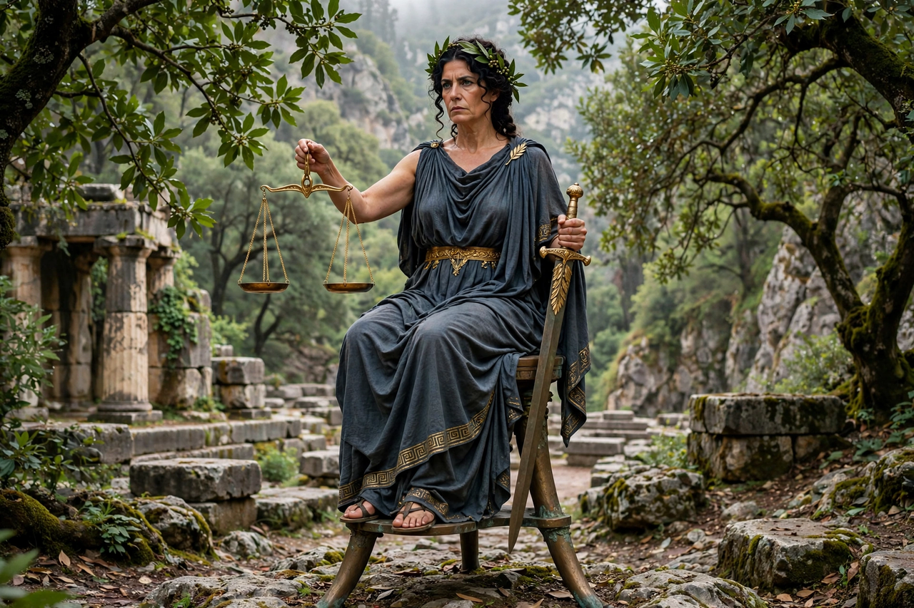

From Wikipedia, the free encyclopedia
| Themis | |
|---|---|
| Affiliation | Greek mythology; Titaness of divine law, custom and order |
| Parents | Uranus and Gaia |
| Children | The Horae (Seasons/Hours, incl. Dike and Eunomia); the Moirai (in some accounts) |
| Oracle | Holder of the Delphic oracle before Apollo |

Themis is the Greek Titaness of divine law, custom and right order — themis being the word for what is laid down by divine and ancestral authority, as against human-made statute. Daughter of Uranus and Gaia, second wife (in the theogonic lists) of Zeus, she is the mother of the Horae — the Seasons, among them Eunomia (Good Order), Dike (Justice) and Eirene (Peace) — and in several accounts of the Fates themselves. Where Dike is justice among human beings, Themis is its cosmic frame: the order that makes assemblies, oaths, hospitality and prophecy binding.
Before Apollo, Aeschylus tells us, the oracle at Delphi belonged to Themis, who received it from her mother Earth and gave it peacefully onward — prophecy as lawful succession. Themis convenes and dissolves the assemblies of the gods, receives suppliants, and guards the laws of hospitality (xenia) that protect strangers. Her iconography — scales, and in later tradition the sword and sometimes the blindfold — flows into the figure of Justice herself: the blindfolded lady with the balance on every courthouse is Themis's and Dike's descendant, the blindfold a Renaissance addition that antiquity would not have recognised.
Greek mythology · Zeus · Nemesis · Maat (fellow order-goddess) · Hera